Digital Comic Book Coloring Process
Comics Coloring Class
I recently finished a comic book coloring class taught by Chris Sotomayer with special guest instructor/critic Marissa Louise through Comics Experience. Soto is not only a top working talent, but is also a great no non-sense teacher. The class came with a large selection of donated line art from all the major publishers to color “test pages” or entire books.
This post is really only touching some of the major points discussed in the course. I learned through improving my page over the course, but learned a great deal more listening to the critiques of other student work. Many of the students were fairly advanced and chose pages with multiple light sources, colored lights from laser blasts, moonlight scenes, and shots from hell (literally). This class was amazing to say the least.
I was a new user of Clip Studio Paint (CSP) when I started this class. Getting comfortable with CSP added to the learning curve. I made many simple errors due to my ignorance of the details of this program that compounded, but I figured it all out for the final image through multiple rounds of critiques. I am happy with the final page. Enjoy the process!
Image Choice
Line art by Robert Atkins and Clayton Brown - IDW G.I. JOE 105
I chose this image to color because it most closely fit with the type of outdoor adventure art that I wanted to continue making. I liked that the page was center line composition of two characters running through a desert landscape towards a military base that included two long shots and two medium shots. This page represents simple visual storytelling and I wanted to see how color could enhance a simple story.
Set-up Clip Studio Paint
When working digitally I had three layers. The inks were on their own layer over the top of a color layer that was on top of a white background. I set the ink layer opacity to about 60% to be able to follow/trace the lines when doing the flats. Also, setting all the tools that you will be working with to no anti-aliasing. This setting will ensure no blending of pixels, just stark pixel color transitions for a finished flat that is set up for the next steps. I made a mistake with one of tools as you will see below. 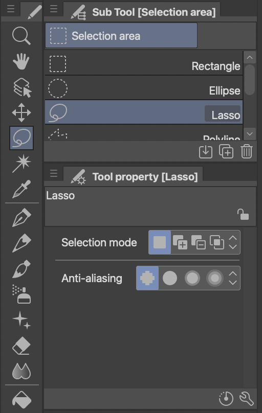 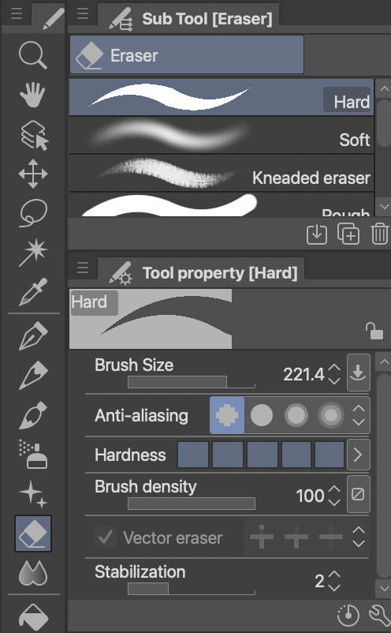
Panels
To start digital coloring you first define the panels with a solid color. You will gradually cut this solid panel shape into the smaller color shapes in the flatting process. By having the panel background a different color from the background of the page (white in this case), you can do shape or color selection in the flatting stage more easily and track your progress as the panel color gradually gets smaller with each new defined shape. 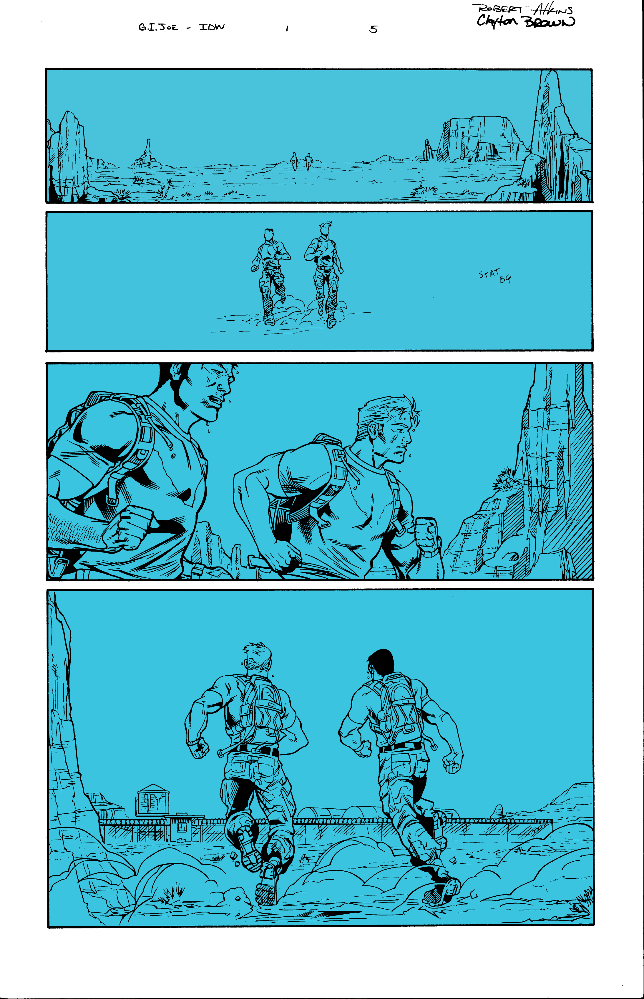
Flats
The point of flatting is to get all the major objects that will be different colors in the final image separated from one another and the background. Flatting takes a long time and double that for me because I needed to re-flat (see below). Flatting starts with the large shapes in the foreground and then moves to background (or visa-versa) depending on the panel. After the page is flatted, the process becomes easy to select by color and make large changes all at once. 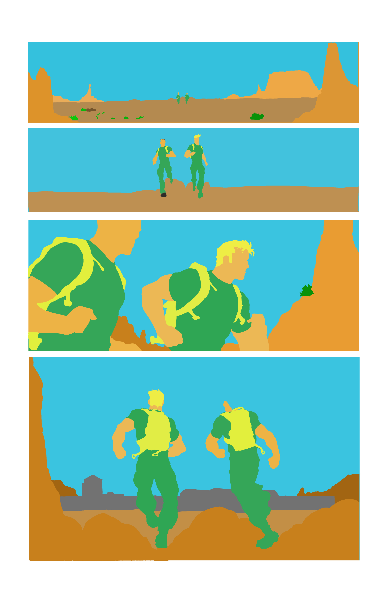
There should just be simple colors and stark color transitions when you zoom in on a properly flatted page. In the following image, there are blended pixels on the edges between colors. This is a huge problem if you want to select entire color sections for the down stream processes because these blended pixels will not get selected. I could not figure out what was going wrong with my page, until I did a test area to reproduce my process and found it was the fill bucket tool. 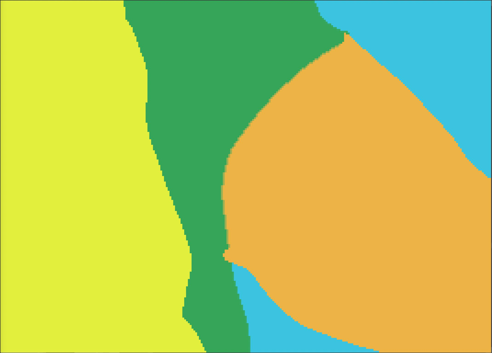
Opps! I also forgot uncheck the anti-aliasing on the fill bucket tool! 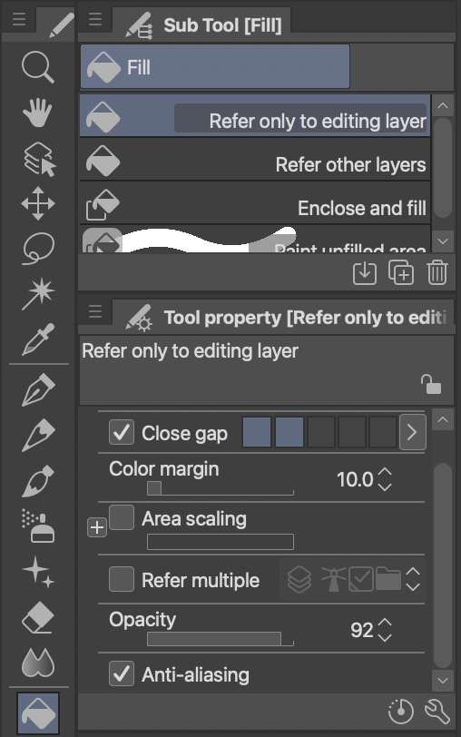
I ended up re-flatting the entire page as that was easier than fixing. Lesson learned. Much better. 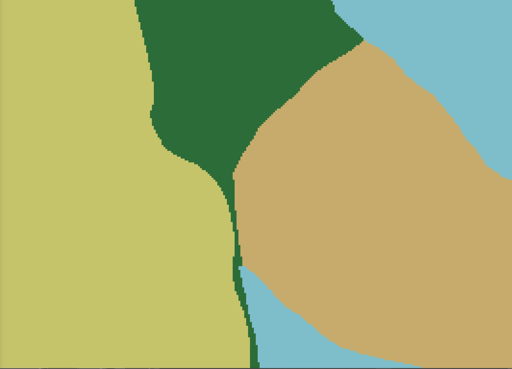
Finished flat
I was unsure at this point if I wanted the two characters to be in the same base camouflage color scheme so I flatted them as separate colors. This image also shows that as long as the colors for each of the flatted shapes are different it does not matter too much what they are. I am sure if you are drawing similar characters in similar environments over multiple pages, you could save yourself some time by flatting in the colors trying to match more closely what the final panel will look like. 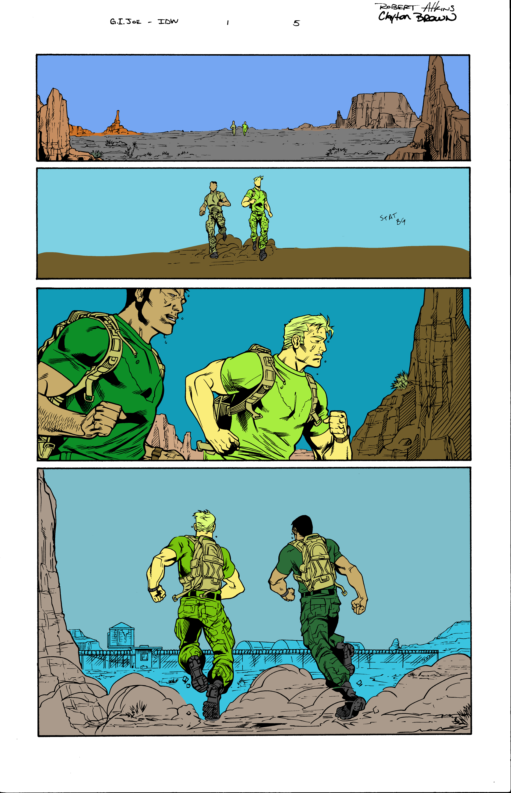
Color Studies
Once the flatting is done properly it is easier to do color and value studies by selecting the shapes and filling with the paint bucket. The paint bucket was especially helpful when doing the camouflage uniforms, the backpacks of the soldiers, the large shapes of the sky, and the rock background. By focusing only on the large shapes you could do even more quick color studies.
I wanted the base colors to reflect commonly seen camouflage patterns and somewhat natural landscape colors even if these two things were not aligned for the purpose of camouflage (matching the environment perfectly). I tried a split-complementary three color scheme and a tetrad (double compliment) four color scheme. I also experimented with different values and atmospheric effect in the sky. I will have a follow-up post on the color theory behind these choices and other options.
Split Complementary Color Scheme
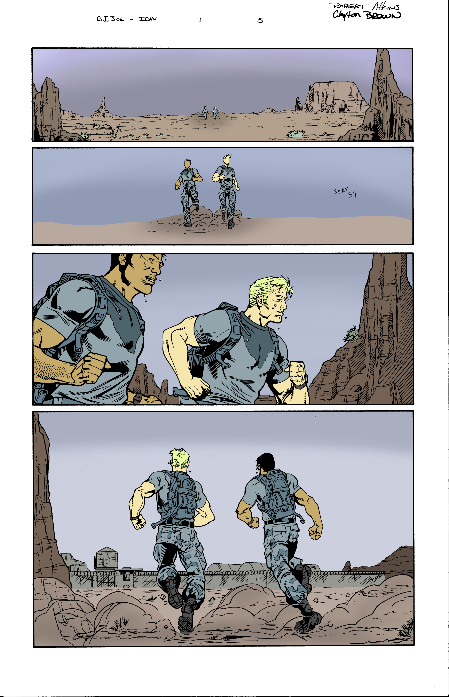
Tetrad Color Scheme
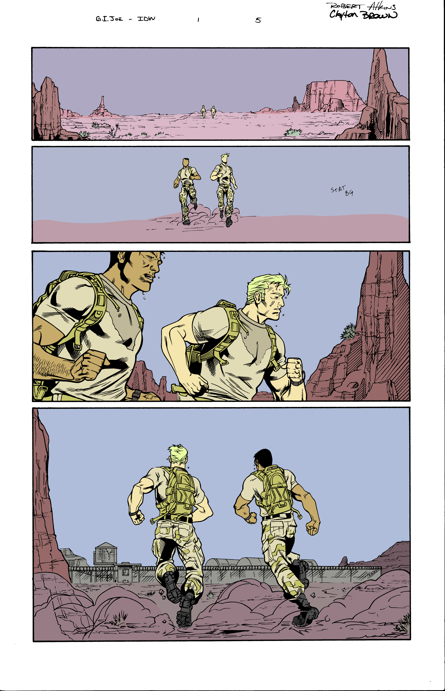
Value Study
Next was a pure value study with a range of values from 20-80% leaving the white (0%) for the page backgrounds and the black (100%) for the inks. At this stage there is a lot of zooming way out from the image or squinting to blur all the detail and make sure that the characters and environment shapes “read” as separate just based on their value. 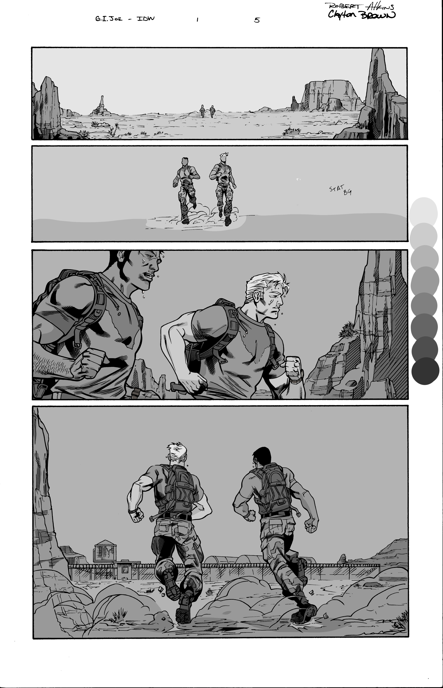
Combination of Value and Color First Attempt
When completing the value study, I accidentally made the white background not white! I could not see this on my digital screen. It was white as far as I was concerned because locally it was the whitest value. All colors are relative!
During the critique for this week the background pinks were a little too pink making this have a “Valentines Day Card” vibe. G.I. JOE Valentines day cards were a thing when I was a kid, but this was not my color intention, so I needed to fix it. It was also pointed out that “STAT BG” in the second panel meant static background. This was a note to the inker to copy the background from panel one, but in this version it did not get completed. 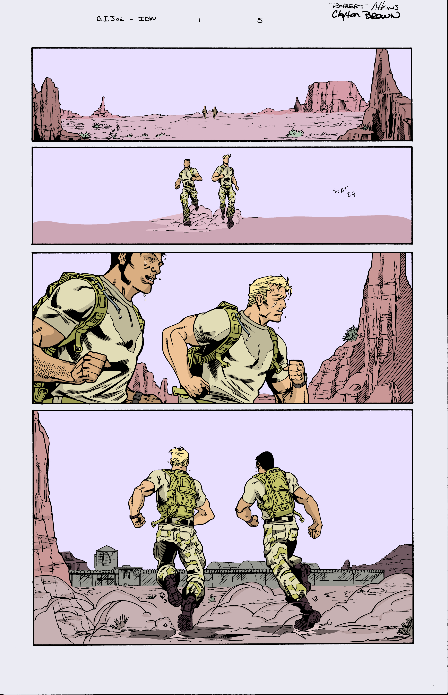
Refinement
I muted the pink hues and warmer colors in general and figured out how to cut and duplicate the background from the inks. I also adjusted the character colors/values to increase the contrast with the background (using a lot of the squinting technique). 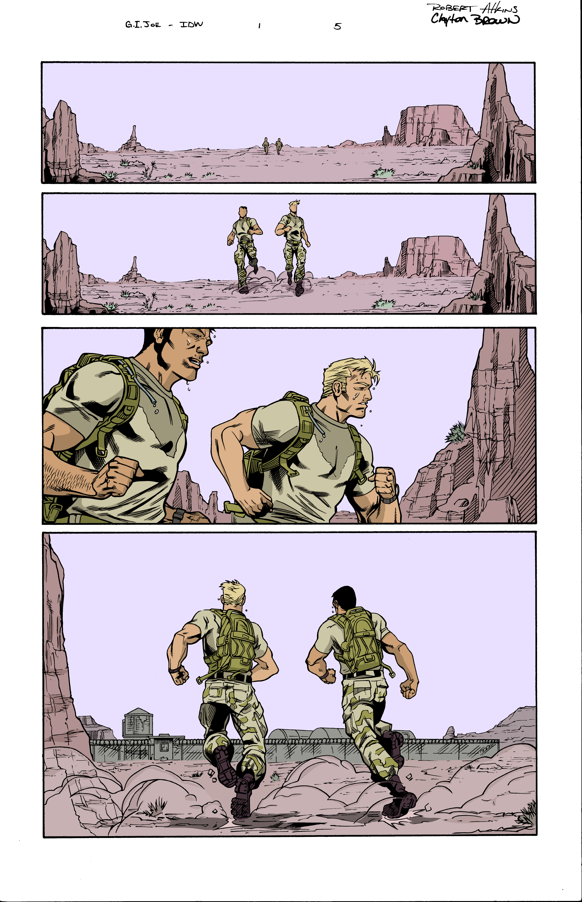
Next I made some adjustments to the black line art in the background to further increase the contrast. The background line art was shifted from black to a very dark version of the base color of the object. This reduces the local contrast of the line art and the object (e.g. mesas). This line art adjustment also helps the background fade more because the details are less visible simulating atmospheric interference when looking at a real landscape. However, after this line art adjustment it became less clear what the viewer should be focusing on in the first two panels. The combination of the background dropping away and the middle ground and foreground being approximately the same values made it confusing for the eye. I think this is a fascinating effect. Balanced images can be thrown off by small tweeks with unintended consequences.
Final Polish
I darkened the foreground rocks and it instantly gives the first two panels a frame around the characters and a clear foreground, middle ground and background. This effect is just the reverse of the atmospheric interference I was trying to achieve by lightening the the inks in the background. At the same time the darker pink/purple in foreground further reduces the “Valentines Day Card Vibe”. Next I lightened the areas around the boots with some “dust” to add to the effect. Finally, I cleaned up the dark edge of the page on the right that was left over from scanning the inks and removed the artists names. Finished page.